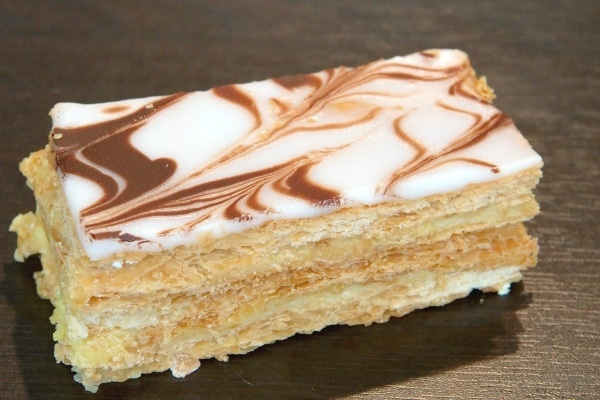

Mille Feuille

Description
This Napoleon dessert is made with frozen puff pastry sheets.
Ingredients
- 1 (17.5 ounce) package frozen puff pastry dough, thawed
- 2 teaspoons white sugar, or as needed for dusting
- 3 sheets aluminum foil
- 1 sheet parchment paper
Steps
- Preheat the oven to 400 degrees F (200 degrees C). Line a baking sheet with a silicone mat.
- Separate dough at the seams into 4 squares and place on the prepared baking sheet. Prick dough all over with the tines of a fork. Lightly sprinkle with sugar.
- Cover with 1 sheet parchment paper, then 3 sheets aluminum foil. Nest another baking sheet on top to apply pressure to dough while it bakes.
- Bake in the preheated oven for 15 minutes. Remove the top baking sheet and foil; gently peel off parchment paper. Continue baking until pastry is browned, 10 to 15 minutes. (Alternatively, you can bake about 7 minutes after uncovering, flip sheets over, and bake until brown on the other side, about 7 more minutes.)
- Transfer to a cooling rack and cool completely before cutting.
- Use a sharp serrated knife with a light sawing motion to square sheets by trimming uneven edges. Cut each rectangle crosswise into 3 equal rectangles. Use 3 rectangles per pastry.